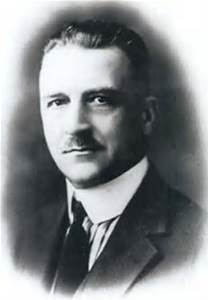

Amadeo Pietro Giannini, also known as Amadeo Peter Giannini or A.P. Giannini (May 6, 1870 – June 3, 1949) was an American banker who founded the Bank of America. Giannini is credited as the inventor of many modern banking practices. Most notably, Giannini was one of the first bankers to offer banking services to middle-class Americans, rather than only the upper class. He also pioneered the holding company structure and established one of the first modern trans-national institutionsAmadeo Pietro Giannini was born in San Jose, California, to Italian immigrant parents. He was the first son of Luigi Giannini (1840–1877) and Virginia (Demartini) Giannini (1850–1920). Luigi Giannini immigrated to the United States from Favale di Malvaro near Genoa, Liguriain the Kingdom of Sardinia (later part of Italy) to prospect in response to the California Gold Rush of 1849. Luigi continued in gold during the 1860s and returned to Italy in 1869 to marry Virginia, bringing her back to the US and settling in San Jose. Luigi Giannini purchased a 40-acre farm at Alviso in 1872 and grew fruits and vegetables for sale. Four years later Luigi Giannini was fatally shot by an employee over a pay dispute. His widow Virginia, with two children and pregnant with a third child, took over operation of the produce business. In 1880, Virginia married Lorenzo Scatena (1859–1930) who began L. Scatena & Co. (which A.P. Giannini would eventually take over). Giannini attended Heald College but realized he could do better in business than at school. In 1885, he dropped out and took a full-time position as a produce broker for L. Scatena & Co.
Giannini worked as a produce broker, commission merchant and produce dealer for farms in the Santa Clara Valley. He was quite successful in that business. He married Clorinda Cuneo (1866–1949), daughter of a North Beach real estate magnate, in 1892 and eventually sold his interest to his employees and retired at the age of 31 to administer his father-in-law's estate. He later became a director of the Columbus Savings & Loan, in which his father-in-law owned an interest. At the time, banks were run for the benefit of the wealthy and the well-connected. Giannini observed an opportunity to service the increasing immigrant population that were without a bank. At loggerheads with the other directors who did not share his sentiment, he quit the board in frustration and started his own bank.